1. Overview
Totem Format adapts the Pokémon TCG for free-for-all multiplayer play (3 or more players, recommended 3–6). It is a battle royale: every player fights for themselves, negotiation and temporary alliances are part of the game, and the last player standing wins.
El Formato Tótem adapta el Pokémon TCG al multijugador todos contra todos (3 o más jugadores, recomendado 3–6). Es un battle royale: cada jugador lucha por sí mismo, la negociación y las alianzas temporales son parte del juego, y gana el último jugador en pie.
- Decks are 100-card singleton decks built around a Totem Pokémon that defines the deck's type identity.
- Prize cards work as your life total: when your Pokémon are Knocked Out, you take your own Prize cards, and you are eliminated when they run out (see Section 7).
- Anything not modified by these rules works exactly as in the official Pokémon TCG rulebook.
- Los mazos son singleton de 100 cartas, construidos alrededor de un Pokémon Tótem que define la identidad de tipos del mazo.
- Las cartas de Premio funcionan como tu vida: cuando tus Pokémon quedan Fuera de Combate, tú robas tus propias cartas de Premio, y quedas eliminado cuando se acaban (ver Sección 7).
- Todo lo que estas reglas no modifiquen funciona exactamente igual que en el reglamento oficial de Pokémon TCG.
2. Card Pool and Deck Construction
Legal Card Pool
- Every Pokémon TCG card ever printed is legal, from the original Base Set to the newest expansion, except the cards on the Banlist.
- Multi-card Pokémon (Pokémon LEGEND, made of 2 halves, and Pokémon V-UNION, made of 4 pieces) are legal, both in the deck and as Totems. See the Deck Rules below and Section 4.
- Todas las cartas de Pokémon TCG jamás impresas son legales, desde el Set Base original hasta la expansión más reciente, excepto las cartas de la Lista Prohibida.
- Los Pokémon multicarta (Pokémon LEGEND, formados por 2 mitades, y Pokémon V-UNION, formados por 4 piezas) son legales, tanto en el mazo como de Tótem. Ver las Reglas del Mazo más abajo y la Sección 4.
Deck Rules
- Size: 100 cards (99 deck cards + 1 Totem Pokémon, which starts outside the deck).
- Multi-card Pokémon: each LEGEND half and each V-UNION piece counts as one card, and the total is always 100. If your Totem is a LEGEND (2 cards in the Totem Zone), your deck has 98 cards; if it is a V-UNION (4 cards in the Totem Zone), your deck has 96.
- Singleton: Only one copy of each card, except Basic Energy, which can be included in any quantity.
- Repeated Pokémon: You may include any number of Pokémon with the same name (all the Pikachu you want), as long as every card is mechanically different (different HP, attacks, or Abilities). Two identical cards are never allowed.
- Rule Box cards: Pokémon with Rule Boxes are allowed in the deck and follow their standard Pokémon TCG rules (including the Prize cards they give when Knocked Out).
- Official global limits still apply, and your Totem counts toward them:
- Maximum 1 ACE SPEC card in total per deck.
- Maximum 1 Radiant Pokémon in total per deck. If your Totem is a Radiant Pokémon, you cannot include another one in the 99.
- Maximum 1 Prism Star card of each name (and they go to the Lost Zone instead of the discard pile, as printed).
- Type identity: All Pokémon and Energy in the deck must respect the Totem's type identity (see Section 3).
- Tamaño: 100 cartas (99 cartas de mazo + 1 Pokémon Tótem, que empieza fuera del mazo).
- Pokémon multicarta: cada mitad de LEGEND y cada pieza de V-UNION cuenta como una carta, y el total siempre es 100. Si tu Tótem es un LEGEND (2 cartas en la Zona del Tótem), tu mazo tiene 98 cartas; si es un V-UNION (4 cartas en la Zona del Tótem), tu mazo tiene 96.
- Singleton: solo una copia de cada carta, excepto la Energía Básica, que puede incluirse en cualquier cantidad.
- Pokémon repetidos: puedes incluir cualquier cantidad de Pokémon con el mismo nombre (todos los Pikachu que quieras), siempre que cada carta sea mecánicamente diferente (distintos PS, ataques o Habilidades). Nunca se permiten dos cartas idénticas.
- Cartas con Rule Box: los Pokémon con Rule Box (recuadro de reglas) se permiten en el mazo y siguen sus reglas estándar de Pokémon TCG (incluidas las cartas de Premio que dan al quedar Fuera de Combate).
- Los límites globales oficiales siguen aplicándose, y tu Tótem cuenta para ellos:
- Máximo 1 carta ACE SPEC en total por mazo.
- Máximo 1 Pokémon Radiante en total por mazo. Si tu Tótem es un Pokémon Radiante, no puedes incluir otro en las 99.
- Máximo 1 carta Prism Star de cada nombre (y van a la Zona Perdida en lugar de a la pila de descartes, como indica la carta).
- Identidad de tipos: todos los Pokémon y Energías del mazo deben respetar la identidad de tipos del Tótem (ver Sección 3).
3. Deck Type Identity
Your deck is built around your Totem. The Totem defines a set of allowed types — its type identity — and every Pokémon in your deck must belong to those types.
Tu mazo se construye alrededor de tu Tótem. El Tótem define un conjunto de tipos permitidos — su identidad de tipos — y todos los Pokémon de tu mazo deben pertenecer a esos tipos.
What Defines Your Identity
- The Totem's own type is always allowed. If the Totem is a dual-type Pokémon, both of its types are allowed.
- Every Energy type required by the Totem's attacks is also allowed (Colorless does not count here — see below).
- Colorless: If the Totem's Retreat Cost is 1 or more, Colorless is part of your identity. If its Retreat Cost is 0, Colorless is not allowed: you cannot include Colorless-type Pokémon or Special Energy that provides Colorless Energy — even if the Totem's own attacks show Colorless symbols.
- Extra types: If the Totem's Retreat Cost is 2 or more, you may add freely chosen extra types equal to its Retreat Cost minus 1 (the first retreat point grants Colorless; each additional point grants one type of your choice).
- Colorless Totem: If the Totem itself is a Colorless Pokémon, Colorless is its base type, so you do not "spend" a retreat point on it: you may choose extra types equal to the full Retreat Cost.
- El propio tipo del Tótem siempre está permitido. Si el Tótem es un Pokémon de doble tipo, ambos tipos están permitidos.
- Todos los tipos de Energía que requieren los ataques del Tótem también están permitidos (el Incoloro no cuenta aquí — ver más abajo).
- Incoloro: si el Coste de Retirada del Tótem es 1 o más, el Incoloro forma parte de tu identidad. Si su Coste de Retirada es 0, el Incoloro no está permitido: no puedes incluir Pokémon de tipo Incoloro ni Energías Especiales que proporcionen Energía Incolora — aunque los propios ataques del Tótem muestren símbolos incoloros.
- Tipos extra: si el Coste de Retirada del Tótem es 2 o más, puedes añadir tipos extra de libre elección iguales a su Coste de Retirada menos 1 (el primer punto de retirada otorga el Incoloro; cada punto adicional otorga un tipo a tu elección).
- Tótem Incoloro: si el propio Tótem es un Pokémon Incoloro, el Incoloro es su tipo base, así que no "gastas" un punto de retirada en él: puedes elegir tantos tipos extra como su Coste de Retirada completo.
Clarifications
- Colorless symbols in attack costs are generic. An attack cost like [W][C][C] only requires Water; the Colorless symbols can be paid with any Energy. They never add a type to (or break) your identity. Only named Energy types count as "required".
- Special Energy and type identity: a Special Energy that can provide Colorless Energy in any way counts as a Special Colorless Energy — you can only include it if Colorless is part of your identity. A Special Energy that only provides Energy of specific types counts as those types, and every type it can provide must be allowed by your identity (for example, Telepathic Energy counts as Psychic: if Psychic is not in your identity, you cannot include it).
- Dual-type Pokémon in the deck: both of their types must be allowed by your identity. (A dual-type Totem grants both of its types, as stated above.)
- Dragon Totems: there is no Dragon Energy, so a Dragon Totem's identity comes from the Energy types its attacks require, plus its retreat bonuses.
- Los símbolos incoloros en los costes de ataque son genéricos. Un coste de ataque como [W][C][C] solo requiere Agua; los símbolos incoloros pueden pagarse con cualquier Energía. Nunca añaden un tipo a tu identidad (ni la rompen). Solo los tipos de Energía con nombre cuentan como "requeridos".
- Energías Especiales e identidad de tipos: una Energía Especial que pueda proporcionar Energía Incolora de cualquier forma cuenta como Energía Especial Incolora — solo puedes incluirla si el Incoloro forma parte de tu identidad. Una Energía Especial que solo proporcione Energía de tipos concretos cuenta como esos tipos, y todos los tipos que pueda proporcionar deben estar permitidos por tu identidad (por ejemplo, la Energía Telepática cuenta como Psíquica: si el Psíquico no está en tu identidad, no puedes incluirla).
- Pokémon de doble tipo en el mazo: ambos tipos deben estar permitidos por tu identidad. (Un Tótem de doble tipo otorga sus dos tipos, como se indica arriba.)
- Tótems de tipo Dragón: no existe la Energía Dragón, así que la identidad de un Tótem Dragón viene de los tipos de Energía que requieren sus ataques, más sus bonos de retirada.
Practical Examples
- Totem type Dragon, attack requires Fire + Psychic + Colorless, Retreat Cost 1 → your deck can include Dragon, Fire, Psychic, and Colorless Pokémon.
- Tótem de tipo Dragón, ataque que requiere Fuego + Psíquico + Incoloro, Coste de Retirada 1 → tu mazo puede incluir Pokémon de tipo Dragón, Fuego, Psíquico e Incoloro.
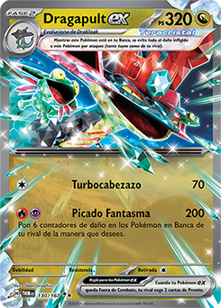
- Totem type Water, attacks require Water only, Retreat Cost 2 → Water and Colorless are allowed, plus 1 extra type of your choice (e.g., Fire).
- Tótem de tipo Agua, ataques que solo requieren Agua, Coste de Retirada 2 → se permiten Agua e Incoloro, más 1 tipo extra a tu elección (p. ej., Fuego).
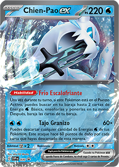
- Colorless Totem, Retreat Cost 2 → Colorless counts as its base type; you may freely choose 2 extra types for the deck.
- Tótem Incoloro, Coste de Retirada 2 → el Incoloro cuenta como su tipo base; puedes elegir libremente 2 tipos extra para el mazo.
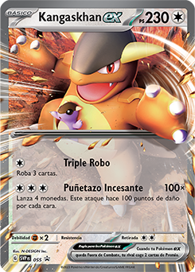
- Totem with Retreat Cost 0 → Colorless is not allowed, even though its attacks show Colorless symbols in their costs.
- Tótem con Coste de Retirada 0 → el Incoloro no está permitido, aunque sus ataques muestren símbolos incoloros en sus costes.
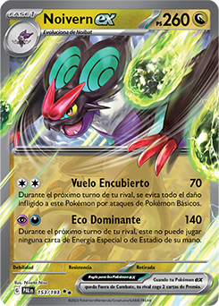
4. The Totem Pokémon
Definition
Your Totem is a Pokémon with a Rule Box (see the Appendix for the full list). It starts the game in the Totem Zone: a special area in the top-right corner of your side of the table, outside your deck.
Tu Tótem es un Pokémon con Rule Box (ver el Apéndice para la lista completa). Empieza la partida en la Zona del Tótem: un área especial en la esquina superior derecha de tu lado de la mesa, fuera de tu mazo.
The Totem Zone
- While in the Totem Zone, the Totem is not in play: it cannot attack, cannot use Abilities, and its Abilities have no effect.
- It cannot be targeted, damaged, or affected by any card, attack, or Ability while it is in the Totem Zone.
- The cards attached to the Totem are just as untouchable: no card, attack, or Ability can affect, move, or discard them until the Totem enters play.
- It does not count toward the limit of 6 Pokémon in play, and it is ignored by any effect that counts or refers to Pokémon in play.
- Mientras está en la Zona del Tótem, el Tótem no está en juego: no puede atacar, no puede usar Habilidades y sus Habilidades no tienen efecto.
- No puede ser objetivo, dañado ni afectado por ninguna carta, ataque o Habilidad mientras esté en la Zona del Tótem.
- Las cartas unidas al Tótem son igual de intocables: ninguna carta, ataque o Habilidad puede afectarlas, moverlas ni descartarlas hasta que el Tótem entre en juego.
- No cuenta para el límite de 6 Pokémon en juego, y es ignorado por cualquier efecto que cuente o haga referencia a Pokémon en juego.
Charging the Totem
- During your turn, you may attach your manual Energy attachment of the turn to the Totem instead of to one of your Pokémon in play.
- The Totem cannot receive Energy from card effects while it is in the Totem Zone — only your manual attachment.
- Each Energy card in the Totem Zone counts as exactly 1 Energy toward the Invocation Cost, regardless of its type or how much Energy it provides in play.
- Special Energy may be attached to the Totem, but while in the Totem Zone it counts
as 1 Colorless Energy and is completely inert: it has no effects, and any
"when you attach this card" effect never triggers (the attachment happened outside of play).
Once the Totem enters play, attached Special Energy works normally from that moment on
(for example, Neo Upper Energy
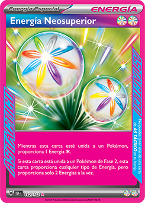
provides its printed Energy again). - Attachment restrictions still apply: if an Energy card can only be attached to a certain kind of Pokémon (for example, "attach this card only to a Pokémon V") and your Totem does not meet that condition, you cannot attach it to the Totem.
- Durante tu turno, puedes unir tu Energía manual del turno al Tótem en lugar de a uno de tus Pokémon en juego.
- El Tótem no puede recibir Energía de efectos de cartas mientras está en la Zona del Tótem — solo tu unión manual.
- Cada carta de Energía en la Zona del Tótem cuenta como exactamente 1 Energía para el Coste de Invocación, sin importar su tipo ni cuánta Energía proporcione en juego.
- Las Energías Especiales pueden unirse al Tótem, pero mientras están en la Zona del Tótem cuentan como 1 Energía Incolora y son completamente inertes: no tienen efectos, y cualquier efecto de "cuando unes esta carta" nunca se activa (la unión ocurrió fuera del juego). Cuando el Tótem entra en juego, las Energías Especiales unidas funcionan con normalidad a partir de ese momento (por ejemplo, la Energía Neo Upper vuelve a proporcionar la Energía impresa en la carta).
- Las restricciones de unión siguen aplicándose: si una carta de Energía solo puede unirse a cierto tipo de Pokémon (por ejemplo, "une esta carta solo a un Pokémon V") y tu Tótem no cumple esa condición, no puedes unírsela al Tótem.
Invocation Cost
The Energy required to summon the Totem depends on its Stage and Retreat Cost:
La Energía necesaria para invocar el Tótem depende de su Fase y de su Coste de Retirada:
| Retreat | Basic | Stage 1 | Stage 2 | Stage 3 |
|---|---|---|---|---|
| None | 1 | 2 | 3 | 4 |
| o | 1 | 2 | 3 | 4 |
| oo | 2 | 3 | 4 | 5 |
| ooo | 2 | 3 | 4 | 5 |
| oooo | 3 | 4 | 5 | 6 |
| ooooo | 3 | 4 | 5 | 6 |
In short: Invocation Cost = Stage value + half the Retreat Cost, rounded down (Stage value: Basic 1, Stage 1 = 2, Stage 2 = 3, Stage 3 = 4). Note that odd Retreat points do not raise the cost: a Totem with Retreat Cost 3 gets one more extra type than one with Retreat Cost 2 (see Section 3) at the same Invocation Cost. This is intentional.
En resumen: Coste de Invocación = valor de Fase + la mitad del Coste de Retirada, redondeado hacia abajo (valor de Fase: Básico 1, Fase 1 = 2, Fase 2 = 3, Fase 3 = 4). Fíjate en que los puntos de Retirada impares no encarecen el coste: un Tótem con Coste de Retirada 3 obtiene un tipo extra más que uno con Coste de Retirada 2 (ver Sección 3) por el mismo Coste de Invocación. Esto es intencional.
Which Stage Does My Totem Use?
- Printed Stage: Basic, Stage 1, and Stage 2 Pokémon use their printed Stage. (Basic Pokémon V, EX, ex, GX, and TAG TEAM all count as Basic.)
- VMAX and VSTAR: they evolve from a Basic Pokémon V, so they count as Stage 1.
- BREAK: one Stage above the Pokémon they evolve from. A BREAK of a Basic counts as Stage 1, a BREAK of a Stage 1 counts as Stage 2, and a BREAK of a Stage 2 counts as Stage 3.
- M Pokémon-EX and Primal Pokémon-EX: they work like BREAK — they count as one Stage above the base Pokémon's normal Stage. Venusaur is a Stage 2, so M Venusaur-EX counts as Stage 3; Groudon is a Basic, so Primal Groudon-EX counts as Stage 1.
- Pokémon LV.X: they also work like BREAK — they count as one Stage above the base Pokémon's normal Stage.
- Mega Pokémon ex (the modern Mega Evolution cards): this rule does not apply to them — they simply use their printed Stage.
- Pokémon LEGEND: they count as Basic in this format.
- Pokémon V-UNION: they count as Stage 2.
- Fase impresa: los Pokémon Básicos, de Fase 1 y de Fase 2 usan su Fase impresa. (Los Pokémon V, EX, ex, GX y TAG TEAM Básicos cuentan todos como Básicos.)
- VMAX y VSTAR: evolucionan de un Pokémon V Básico, así que cuentan como Fase 1.
- BREAK: una Fase por encima del Pokémon del que evolucionan. Un BREAK de un Básico cuenta como Fase 1, un BREAK de una Fase 1 cuenta como Fase 2, y un BREAK de una Fase 2 cuenta como Fase 3.
- M Pokémon-EX y Pokémon-EX Primigenios: funcionan como los BREAK — cuentan como una Fase por encima de la Fase normal del Pokémon base. Venusaur es una Fase 2, así que M Venusaur-EX cuenta como Fase 3; Groudon es un Básico, así que Groudon-EX Primigenio cuenta como Fase 1.
- Pokémon LV.X: también funcionan como los BREAK — cuentan como una Fase por encima de la Fase normal del Pokémon base.
- Mega Pokémon ex (las cartas modernas de Megaevolución): esta regla no se les aplica — simplemente usan su Fase impresa.
- Pokémon LEGEND: cuentan como Básicos en este formato.
- Pokémon V-UNION: cuentan como Fase 2.
Entering Play
- When the Totem has enough Energy and there is space on your side of the field, it automatically enters play. You choose whether it enters on your Bench or in the Active Spot; if it enters the Active Spot, your current Active Pokémon moves to the Bench for free.
- If you already have 6 Pokémon in play, the Totem cannot enter — and you cannot attach the final Energy to it until a space opens up.
- The Totem enters play as it is, without evolving. It needs no pre-Evolutions (you don't need a Drakloak in play to summon your Dragapult ex Totem).
- The Totem can never be evolved or devolved, by any means.
- Because it does not evolve, the Totem does not suffer Evolution Sickness: it may attack the same turn it enters play, if its attack costs are met.
- Once in play, the Totem follows all standard Pokémon TCG rules like any other Pokémon.
- Cuando el Tótem tiene suficiente Energía y hay espacio en tu lado del campo, entra en juego automáticamente. Tú eliges si entra en tu Banca o en el Puesto Activo; si entra en el Puesto Activo, tu Pokémon Activo actual pasa a la Banca gratis.
- Si ya tienes 6 Pokémon en juego, el Tótem no puede entrar — y no puedes unirle la Energía final hasta que se libere un espacio.
- El Tótem entra en juego tal cual es, sin evolucionar. No necesita pre-Evoluciones (no necesitas un Drakloak en juego para invocar tu Tótem Dragapult ex).
- El Tótem nunca puede evolucionar ni involucionar, por ningún medio.
- Como no evoluciona, el Tótem no sufre el mareo de evolución: puede atacar el mismo turno en que entra en juego, si cumple los costes de su ataque.
- Una vez en juego, el Tótem sigue todas las reglas estándar de Pokémon TCG como cualquier otro Pokémon.
Totem Defeat and Leaving Play
- When your Totem is Knocked Out, you take Prize cards from your own Prize pile according to its printed Rule Box (see Section 7), and then you choose where the Totem goes: back to the Totem Zone, or to the discard pile.
- The same applies to any effect that would move your Totem out of play (to the hand, the deck, the discard pile, or the Lost Zone): you may send it where the effect says, or put it in the Totem Zone instead.
- Whenever the Totem leaves play, all cards attached to it are discarded, and all damage and effects on it are removed.
- Cost increase: every time your Totem is Knocked Out, its Invocation Cost increases permanently by 1 — including the first time. The Invocation Cost cannot be modified by card effects in any way: it only changes by increasing with each Knock Out.
- If your Totem is in the discard pile (or another zone outside the Totem Zone), it behaves like a normal card there: effects like Super Rod can return it to your hand or your deck, and it can be put into play from your hand or your deck if a card effect says so — always as it is, without needing to evolve it.
- Playing your Totem from your hand: if your Totem is in your hand, you may play it onto your Bench as if it were a Basic Pokémon, no matter its actual Stage. This is optional, never an obligation.
- Cuando tu Tótem queda Fuera de Combate, tú robas cartas de Premio de tu propia pila según su Rule Box impreso (ver Sección 7), y después tú eliges adónde va el Tótem: de vuelta a la Zona del Tótem, o a la pila de descartes.
- Lo mismo se aplica a cualquier efecto que mueva tu Tótem fuera del juego (a la mano, al mazo, a la pila de descartes o a la Zona Perdida): puedes enviarlo adonde diga el efecto, o ponerlo en la Zona del Tótem en su lugar.
- Siempre que el Tótem sale del juego, todas las cartas unidas a él se descartan, y todo el daño y los efectos sobre él se eliminan.
- Aumento de coste: cada vez que tu Tótem queda Fuera de Combate, su Coste de Invocación aumenta permanentemente en 1 — incluida la primera vez. El Coste de Invocación no puede modificarse con efectos de cartas de ninguna forma: solo cambia aumentando con cada Fuera de Combate.
- Si tu Tótem está en la pila de descartes (o en otra zona fuera de la Zona del Tótem), allí se comporta como una carta normal: efectos como la Supercaña pueden devolverlo a tu mano o a tu mazo, y puede ponerse en juego desde la mano o desde el mazo si una carta lo indica — siempre tal cual es, sin necesidad de evolucionarlo.
- Jugar tu Tótem desde la mano: si tu Tótem está en tu mano, puedes bajarlo a tu Banca como si fuese un Pokémon Básico, sin importar su Fase real. Es opcional, nunca una obligación.
Example
- A Stage 2 Totem with Retreat Cost oo requires 4 Energy.
- After its first Knock Out, invoking it again requires 5 Energy; after a second Knock Out, 6 Energy, and so on.
- Un Tótem de Fase 2 con Coste de Retirada oo requiere 4 Energías.
- Tras su primer Fuera de Combate, volver a invocarlo requiere 5 Energías; tras el segundo, 6 Energías, y así sucesivamente.
Multi-Card Totems: LEGEND and V-UNION
Pokémon LEGEND (2 halves) and Pokémon V-UNION (4 pieces) can be Totems. All of their cards start together in the Totem Zone, and they are invoked as a single Pokémon with a single Invocation Cost.
Los Pokémon LEGEND (2 mitades) y los Pokémon V-UNION (4 piezas) pueden ser Tótems. Todas sus cartas empiezan juntas en la Zona del Tótem, y se invocan como un solo Pokémon con un único Coste de Invocación.
- Pokémon LEGEND count as Basic Pokémon in this format (they use the Basic column of the Invocation table). If your LEGEND Totem ends up outside the Totem Zone (shuffled into your deck, returned to your hand…), it plays like any Basic Totem: you need both halves in your hand to play it onto your Bench. A lone half is not a Pokémon and cannot be played.
- LEGEND Prizes: as always, the printed rule decides — Ho-Oh LEGEND and Lugia LEGEND give 1 Prize card; the dual Pokémon LEGEND (Kyogre & Groudon, Palkia & Dialga, etc.) give 2.
- Pokémon V-UNION count as Stage 2 and give 3 Prize cards when Knocked Out, as their printed rule says.
- Reviving a V-UNION: if your V-UNION is in your discard pile (for example, because you sent your Totem there after a Knock Out), you may use its printed rule to combine its 4 pieces from the discard pile and put it onto your Bench — but only once per game per player.
- Los Pokémon LEGEND cuentan como Pokémon Básicos en este formato (usan la columna de Básico de la tabla de Invocación). Si tu Tótem LEGEND acaba fuera de la Zona del Tótem (barajado en tu mazo, devuelto a tu mano…), se juega como cualquier Tótem Básico: necesitas las 2 mitades en tu mano para bajarlo a tu Banca. Una mitad suelta no es un Pokémon y no puede jugarse.
- Premios de los LEGEND: como siempre, decide su regla impresa — Ho-Oh LEGEND y Lugia LEGEND dan 1 carta de Premio; los Pokémon LEGEND duales (Kyogre & Groudon, Palkia & Dialga, etc.) dan 2.
- Los Pokémon V-UNION cuentan como Fase 2 y dan 3 cartas de Premio al quedar Fuera de Combate, como dice su regla impresa.
- Revivir un V-UNION: si tu V-UNION está en tu pila de descartes (por ejemplo, porque enviaste allí tu Tótem tras un Fuera de Combate), puedes usar su regla impresa para combinar sus 4 piezas desde la pila de descartes y ponerlo en tu Banca — pero solo una vez por partida por jugador.
5. Game Setup
- Place your Totem in the Totem Zone (top-right corner, outside the deck).
- Shuffle your 99-card deck and draw a hand of 7 cards.
- Mulligans are free: if you have no Basic Pokémon in hand, reveal your hand, shuffle it back, and draw 7 new cards. Repeat until you have a Basic Pokémon. Opponents do not draw extra cards for your mulligans. If your hand has at least one Basic Pokémon, you must keep it and play with it, as in the original TCG — there are no voluntary mulligans.
- Put one Basic Pokémon face down as your Active Pokémon, and up to 5 more face down on your Bench.
- Place the top 6 cards of your deck face down as your Prize cards. Every player has exactly 6 Prize cards, no matter how many players are in the game.
- All players roll a die: the highest roll goes first, and play proceeds clockwise from that player. If several players tie for the highest roll, they roll again among themselves until the tie is broken.
- All players flip their Active and Benched Pokémon face up and the game begins.
- Coloca tu Tótem en la Zona del Tótem (esquina superior derecha, fuera del mazo).
- Baraja tu mazo de 99 cartas y roba una mano de 7 cartas.
- Los mulligans son gratis: si no tienes ningún Pokémon Básico en la mano, enseña tu mano, barájala de vuelta al mazo y roba 7 cartas nuevas. Repite hasta tener un Pokémon Básico. Los rivales no roban cartas extra por tus mulligans. Si tu mano tiene al menos un Pokémon Básico, estás obligado a quedártela y jugar con ella, como en el TCG original — no hay mulligans voluntarios.
- Pon un Pokémon Básico boca abajo como tu Pokémon Activo, y hasta 5 más boca abajo en tu Banca.
- Coloca las 6 cartas superiores de tu mazo boca abajo como tus cartas de Premio. Cada jugador tiene exactamente 6 cartas de Premio, sin importar cuántos jugadores haya en la partida.
- Todos los jugadores lanzan un dado: el resultado más alto empieza, y el juego continúa en el sentido de las agujas del reloj desde ese jugador. Si varios jugadores empatan con el resultado más alto, desempatan entre ellos con otra tirada hasta que se rompa el empate.
- Todos los jugadores voltean boca arriba sus Pokémon Activos y de Banca, y la partida comienza.
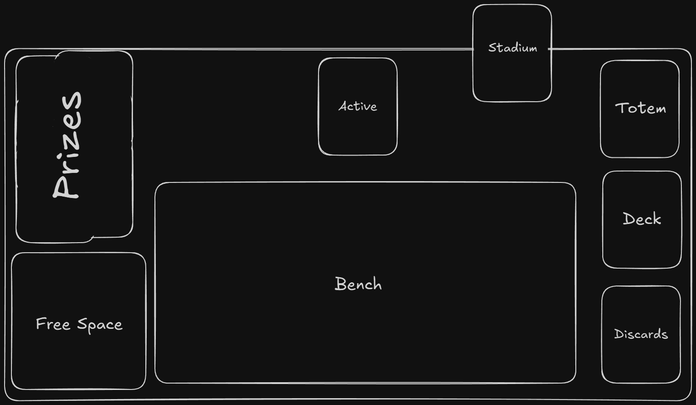
6. Turn Structure
Turns follow the standard Pokémon TCG structure:
Los turnos siguen la estructura estándar de Pokémon TCG:
- Draw Phase: Draw 1 card. If you cannot draw because your deck is empty, you are eliminated (see Section 13).
- Action Phase — in any order:
- Play Basic Pokémon to your Bench
- Evolve Pokémon
- Attach 1 Energy (to a Pokémon in play, or to your Totem)
- Use Abilities
- Play Trainer cards (1 Supporter and 1 Stadium per turn)
- Retreat your Active Pokémon (once per turn)
- Attack Phase: You may declare an attack against one opponent of your choice. Attacking ends your turn.
- Pokémon Checkup: Apply Special Conditions and end-of-turn effects, in the standard official order.
- Fase de Robo: roba 1 carta. Si no puedes robar porque tu mazo está vacío, quedas eliminado (ver Sección 13).
- Fase de Acciones — en cualquier orden:
- Jugar Pokémon Básicos a tu Banca
- Evolucionar Pokémon
- Unir 1 Energía (a un Pokémon en juego, o a tu Tótem)
- Usar Habilidades
- Jugar cartas de Entrenador (1 Partidario y 1 Estadio por turno)
- Hacer retirada de tu Pokémon Activo (una vez por turno)
- Fase de Ataque: puedes declarar un ataque contra un rival de tu elección. Atacar termina tu turno.
- Chequeo Pokémon: aplica las Condiciones Especiales y los efectos de final de turno, en el orden oficial estándar.
First Round Rule
- During the first round of the game, no player may attack or play Supporter cards.
- Playing Items outside your turn (see Section 10) is allowed during the first round.
- All other actions are allowed as normal.
- Durante la primera ronda de la partida, ningún jugador puede atacar ni jugar cartas de Partidario.
- Jugar Objetos fuera de tu turno (ver Sección 10) sí está permitido durante la primera ronda.
- Todas las demás acciones se permiten con normalidad.
Evolution Sickness
- A Pokémon that evolves during a turn cannot attack that same turn, and no Pokémon can evolve the turn it comes into play or during each player's first turn.
- The Totem is exempt when it enters play, because it does not evolve — it is summoned as it is and may attack immediately.
- Un Pokémon que evoluciona durante un turno no puede atacar ese mismo turno, y ningún Pokémon puede evolucionar el turno en que entra en juego ni durante el primer turno de cada jugador.
- El Tótem está exento cuando entra en juego, porque no evoluciona — se invoca tal cual es y puede atacar inmediatamente.
7. Prize Cards Are Your Life
In Totem Format, Prize cards work as your life total. This is the biggest difference from the official 1v1 game, where you take Prize cards when you Knock Out your opponent's Pokémon.
En el Formato Tótem, las cartas de Premio funcionan como tu vida. Esta es la mayor diferencia respecto al juego oficial 1 contra 1, donde robas cartas de Premio cuando dejas Fuera de Combate a los Pokémon de tu rival.
- Every player starts with 6 Prize cards, regardless of the number of players.
- When one of your Pokémon is Knocked Out — by an attack, an Ability, a Special
Condition like Poison, or any other effect — you take Prize cards from
your own Prize pile and put them into your hand:
- Pokémon without a Rule Box: you take 1 Prize card.
- Rule Box Pokémon (including your Totem): you take as many Prize cards as its printed rule says. Most give 2 or 3, but some Rule Box Pokémon (such as Radiant, Prism Star, BREAK, Shining, or Gold Star Pokémon) only give 1.
- When you take your last Prize card (or you must take more Prize cards than you have left), you are eliminated (see Section 13).
- Cada jugador empieza con 6 cartas de Premio, sin importar el número de jugadores.
- Cuando uno de tus Pokémon queda Fuera de Combate — por un ataque, una Habilidad,
una Condición Especial como el Envenenamiento, o cualquier otro efecto — tú robas
cartas de Premio de tu propia pila de Premios y las pones en tu mano:
- Pokémon sin Rule Box: robas 1 carta de Premio.
- Pokémon con Rule Box (incluido tu Tótem): robas tantas cartas de Premio como diga su regla impresa. La mayoría dan 2 o 3, pero algunos Pokémon con Rule Box (como los Radiantes, los Prism Star, los BREAK, los Shining o los Gold Star) solo dan 1.
- Cuando robas tu última carta de Premio (o debes robar más cartas de Premio de las que te quedan), quedas eliminado (ver Sección 13).
Why This Design?
- In a battle royale, rewarding the attacker with Prize draws would encourage kill stealing. Here, no one "profits" from a Knock Out except by pushing that player closer to elimination.
- Taking your own Prize cards when you get hit is a small comeback mechanic: the player being attacked gains resources.
- En un battle royale, recompensar al atacante con Premios fomentaría el robo de bajas (kill stealing). Aquí nadie "gana" nada con un Fuera de Combate, salvo acercar a ese jugador a la eliminación.
- Robar tus propias cartas de Premio cuando te golpean es una pequeña mecánica de remontada: el jugador atacado gana recursos.
Effects That Modify Prize Taking
Prize cards are always taken by their owner — no effect can make a player take Prize cards from another player's Prize pile. From there, two cases:
Las cartas de Premio siempre las roba su propietario — ningún efecto puede hacer que un jugador robe cartas de Premio de la pila de otro jugador. A partir de ahí, dos casos:
- Modifiers tied to a Knock Out ("take 1 more Prize card", "takes 1 fewer Prize card"): they modify how many Prize cards the owner of the Knocked Out Pokémon takes. An attack with "take 1 more Prize card if this attack Knocks Out a Pokémon" makes the hit player take 1 extra Prize from their own pile — pushing them closer to elimination. A defensive "takes 1 fewer Prize card" makes its owner take 1 fewer when it is Knocked Out.
- Taking Prizes without a Knock Out ("take a Prize card"): these effects are literal — you take your own Prize cards. You move closer to elimination, but you can rescue cards trapped in your Prizes (in a singleton deck, a key piece may be waiting there). They are a risky tool, not a reward.
- Modificadores ligados a un Fuera de Combate ("toma 1 carta de Premio más", "toma 1 carta de Premio menos"): modifican cuántas cartas de Premio roba el dueño del Pokémon Fuera de Combate. Un ataque con "toma 1 carta de Premio más si este ataque deja Fuera de Combate a un Pokémon" hace que el jugador golpeado robe 1 Premio extra de su propia pila — acercándolo a su eliminación. Un "toma 1 carta de Premio menos" defensivo hace que su dueño robe 1 menos cuando queda Fuera de Combate.
- Robar Premios sin Fuera de Combate ("toma 1 carta de Premio"): estos efectos son literales — tú robas tus propias cartas de Premio. Te acercas a tu eliminación, pero puedes rescatar cartas atrapadas en tus Premios (en un mazo singleton, una pieza clave puede estar esperando ahí). Son una herramienta arriesgada, no una recompensa.
Cards That Reference Prize Cards
Effects that reference Prize cards always use the real, current number of remaining Prize cards, at the moment the effect resolves:
Los efectos que mencionan las cartas de Premio siempre usan el número real y actual de cartas de Premio restantes, en el momento en que el efecto se resuelve:
- "Your Prize cards" → your actual remaining Prize count.
- "Your opponent's Prize cards" → in multiplayer, this means one opponent you choose (or the opponent you are targeting) when the effect resolves. It never compares you against the whole table at once.
- "Each player's Prize cards" → each player uses their own count.
- Prize counts are never swapped or inverted: comparisons and amounts always use each player's real numbers. Who takes the Prize cards is governed by the rule above — always their owner.
- "Tus cartas de Premio" → tu número real de Premios restantes.
- "Las cartas de Premio de tu rival" → en multijugador significa un rival que tú eliges (o el rival al que estás atacando) cuando el efecto se resuelve. Nunca te compara contra toda la mesa a la vez.
- "Las cartas de Premio de cada jugador" → cada jugador usa su propio número.
- Los números de Premios nunca se intercambian ni invierten: las comparaciones y cantidades siempre usan los números reales de cada jugador. Quién roba las cartas de Premio lo determina la regla de arriba — siempre su propietario.
Example 1: Iono
Iono 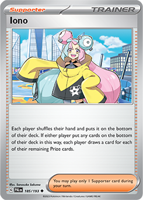
Iono hace que cada jugador baraje su mano y robe tantas cartas como cartas de Premio le queden. Cada jugador simplemente cuenta sus propios Premios restantes y roba esa cantidad. Ten en cuenta que en este formato los jugadores que han recibido muchos golpes tienen menos Premios — así que Iono castiga más a los jugadores debilitados. Elige bien el momento.
Example 2: Prize Comparison
A card that says "if you have more Prize cards remaining than your opponent" compares your count against the one opponent you choose or are targeting with that card or attack — not against every player. Remember that in this format taking hits lowers your Prize count: you have more Prizes remaining than any opponent who is more damaged than you. These "comeback" cards therefore flip roles here — they become tools to finish off weakened players, and the healthiest player at the table is naturally protected from them (nobody has more Prizes remaining than they do).
Una carta que diga "si te quedan más cartas de Premio que a tu rival" compara tu número contra el único rival que eliges o al que apuntas con esa carta o ataque — no contra todos los jugadores. Recuerda que en este formato recibir golpes reduce tus Premios: tienes más Premios restantes que cualquier rival más dañado que tú. Por eso estas cartas de "remontada" invierten aquí su papel — se convierten en herramientas para rematar a los jugadores debilitados, y el jugador más sano de la mesa está protegido de ellas de forma natural (nadie tiene más Premios restantes que él).
8. Rounds and Free Interaction
Matches are divided into full rounds: each active player takes one turn, in order.
Las partidas se dividen en rondas completas: cada jugador activo juega un turno, en orden.
- During your turn, you may attack any opponent, following standard Pokémon TCG rules. Declare your target when you attack.
- Players are free to negotiate, form temporary alliances, or shift aggression based on the board state. Deals are not binding.
- Eliminated players are immediately removed from the game and are no longer considered for any effect (see Section 13).
- Durante tu turno, puedes atacar a cualquier rival, siguiendo las reglas estándar de Pokémon TCG. Declara tu objetivo al atacar.
- Los jugadores son libres de negociar, formar alianzas temporales o cambiar de objetivo según el estado de la mesa. Los pactos no son vinculantes.
- Los jugadores eliminados se retiran de la partida inmediatamente y dejan de considerarse para cualquier efecto (ver Sección 13).
9. Multiplayer Effect Resolution
Card effects resolve exactly according to their printed text. The scope of an effect is determined solely by its wording — no reinterpretation is applied.
Los efectos de las cartas se resuelven exactamente según su texto impreso. El alcance de un efecto lo determina únicamente su redacción — no se aplica ninguna reinterpretación.
A note on older eras: wherever these rules say "Ability", they apply equally to the equivalent mechanics from every era — Pokémon Powers (1999–2002), Poké-POWERs and Poké-BODYs (2002–2011), and Ancient Traits. However, card effects keep their printed scope, exactly as in the official game: a card that blocks or references "Abilities" does not affect Pokémon Powers, Poké-POWERs, Poké-BODYs, or Ancient Traits — and a card that references "Pokémon Powers" does not affect Abilities.
Nota sobre las eras antiguas: donde estas reglas dicen "Habilidad", se aplican igual a las mecánicas equivalentes de todas las eras — los Pokémon Powers (1999–2002), los Poké-POWERs y Poké-BODYs (2002–2011) y los Rasgos Antiguos. Sin embargo, los efectos de las cartas mantienen su alcance impreso, exactamente como en el juego oficial: una carta que bloquee o mencione "Habilidades" no afecta a los Pokémon Powers, Poké-POWERs, Poké-BODYs ni Rasgos Antiguos — y una carta que mencione "Pokémon Powers" no afecta a las Habilidades.
Player Scope
- "Each player" / "all players" → applies to every player in the game.
- "Your opponent" → applies to one opponent. The player resolving the effect chooses one legal opponent at resolution (or the opponent already being targeted, for attacks).
- If a card requires choosing an opponent, the controller selects one legal opponent when it resolves.
- "Cada jugador" / "todos los jugadores" → se aplica a todos los jugadores de la partida.
- "Tu rival" → se aplica a un rival. El jugador que resuelve el efecto elige un rival legal en la resolución (o el rival al que ya está atacando, en el caso de los ataques).
- Si una carta requiere elegir un rival, su controlador selecciona un rival legal cuando se resuelve.
Pokémon Scope
- "All Pokémon in play" → affects Pokémon belonging to all players.
- "Each Pokémon" meeting a condition → all Pokémon that satisfy it, regardless of controller.
- "Your opponent's Pokémon" → only Pokémon belonging to the chosen opponent.
- "Todos los Pokémon en juego" → afecta a los Pokémon de todos los jugadores.
- "Cada Pokémon" que cumpla una condición → todos los Pokémon que la cumplan, sin importar su controlador.
- "Los Pokémon de tu rival" → solo los Pokémon del rival elegido.
Continuous Abilities
- Continuous Abilities apply per their printed wording while their source is in play.
- If a Continuous Ability says "your opponent", its controller chooses the affected opponent when it comes into play, and it affects only that opponent while it remains in play.
- If the chosen opponent is eliminated, the Ability's controller immediately chooses a new opponent as its target.
- If it says "each player" or affects all Pokémon in play, it applies globally.
- Game state legality is checked immediately after any action resolves.
- Las Habilidades continuas se aplican según su redacción impresa mientras su fuente esté en juego.
- Si una Habilidad continua dice "tu rival", su controlador elige al rival afectado cuando entra en juego, y afecta solo a ese rival mientras permanezca en juego.
- Si el rival elegido queda eliminado, el controlador de la Habilidad elige inmediatamente un nuevo rival como objetivo.
- Si dice "cada jugador" o afecta a todos los Pokémon en juego, se aplica globalmente.
- La legalidad del estado del juego se comprueba inmediatamente después de resolver cualquier acción.
Examples
- "Each player shuffles their hand into their deck and draws 4 cards." → All players do it.
- "During Pokémon Checkup, put 1 damage counter on each Pokémon that has an Ability." → Every Pokémon in play that qualifies is affected.
- "Switch 1 of your opponent's Benched Pokémon with their Active Pokémon." → The controller chooses one opponent; only that opponent's Pokémon are affected.
- Sudowoodo's Ability "Your opponent can't have more than 4 Benched Pokémon." → Continuous; affects only the one chosen opponent.
- "Cada jugador baraja su mano en su mazo y roba 4 cartas." → Todos los jugadores lo hacen.
- "Durante el Chequeo Pokémon, pon 1 contador de daño en cada Pokémon que tenga una Habilidad." → Afecta a todos los Pokémon en juego que cumplan la condición.
- "Cambia 1 de los Pokémon en Banca de tu rival por su Pokémon Activo." → El controlador elige un rival; solo los Pokémon de ese rival se ven afectados.
- La Habilidad de Sudowoodo "Tu rival no puede tener más de 4 Pokémon en Banca." → Continua; afecta solo al único rival elegido.
10. Items Outside Your Turn
Item cards can be played outside of your turn, letting you influence the game even when it is not your turn. This is the heart of the format's political gameplay.
Las cartas de Objeto pueden jugarse fuera de tu turno, permitiéndote influir en la partida incluso cuando no es tu turno. Este es el corazón del juego político del formato.
Rules
- Each player may play a maximum of 1 Item outside of their own turn per round.
- Items can target your own Pokémon or another player's Pokémon. Whoever plays the Item pays all of its costs.
- When your Item affects another player's cards or zones, that player is treated as "you" for resolving the card's instructions, and they make any choices involving their own cards (their deck, their hand, their Bench).
- Item effects otherwise follow standard Pokémon TCG rules.
- Timing: exact timing windows (when during another player's turn an Item can be played, and what it can respond to) are still being playtested — see the FAQ for the current recommendation.
- Cada jugador puede jugar un máximo de 1 Objeto fuera de su propio turno por ronda.
- Los Objetos pueden apuntar a tus propios Pokémon o a los Pokémon de otro jugador. Quien juega el Objeto paga todos sus costes.
- Cuando tu Objeto afecta a las cartas o zonas de otro jugador, ese jugador se considera "tú" al resolver las instrucciones de la carta, y él toma todas las decisiones que involucren sus propias cartas (su mazo, su mano, su Banca).
- Por lo demás, los efectos de los Objetos siguen las reglas estándar de Pokémon TCG.
- Timing: las ventanas exactas de timing (en qué momento del turno de otro jugador puede jugarse un Objeto, y a qué puede responder) todavía se están probando — consulta las Preguntas Frecuentes para la recomendación actual.
Examples
- Example 1: Player A uses a "Potion
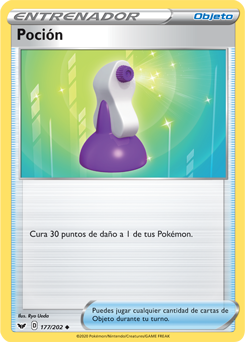
" on their own Pokémon during Player B's turn. The Pokémon heals normally. - Example 2: Player C uses an "Ultra
Ball
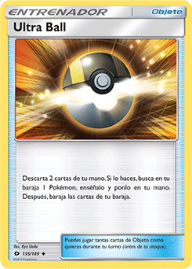
" for Player D's benefit. Player C pays the cost (discards 2 cards from their own hand), and Player D searches their own deck and chooses which Pokémon goes to their hand. - Example 3: Player E plays a "Switch
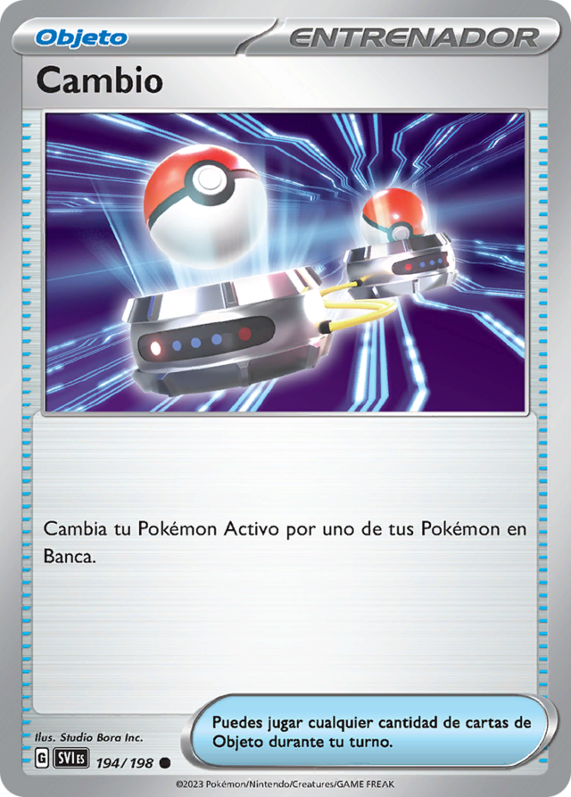
" on an opponent's Active Pokémon. That opponent switches it with one of their Benched Pokémon (their choice), and Player E pays any costs.
- Ejemplo 1: el Jugador A usa una "Poción" en su propio Pokémon durante el turno del Jugador B. El Pokémon se cura con normalidad.
- Ejemplo 2: el Jugador C usa una "Ultra Ball " en beneficio del Jugador D. El Jugador C paga el coste (descarta 2 cartas de su propia mano), y el Jugador D busca en su propio mazo y elige qué Pokémon va a su mano.
- Ejemplo 3: el Jugador E juega un "Cambio" sobre el Pokémon Activo de un rival. Ese rival lo cambia por uno de sus Pokémon en Banca (a su elección), y el Jugador E paga los costes que haya.
Strategic Notes
- This mechanic enables temporary alliances and interference with rival strategies.
- Since you only get 1 off-turn Item per round, timing is critical.
- Esta mecánica permite alianzas temporales e interferir en las estrategias rivales.
- Como solo tienes 1 Objeto fuera de turno por ronda, el momento en que lo usas es crítico.
11. Stadiums
Stadium cards work as in the standard game, with clarifications for multiplayer.
Las cartas de Estadio funcionan como en el juego estándar, con aclaraciones para el multijugador.
Rules
- Only one Stadium may be in play at a time, for the whole table. Playing a new one discards the old one and ends its effects.
- Stadium effects that affect "each player" or "all Pokémon" apply to the whole table, including Totem Pokémon in play (but never to Totems in the Totem Zone).
- For Stadiums with directional effects (e.g.,
Parallel City
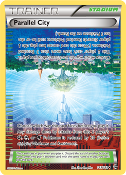
), the player who plays it chooses the facing: the chosen effect applies to that player, and the opposite effect applies to all other players.
- Solo puede haber un Estadio en juego a la vez, para toda la mesa. Jugar uno nuevo descarta el anterior y termina sus efectos.
- Los efectos de Estadio que afectan a "cada jugador" o a "todos los Pokémon" se aplican a toda la mesa, incluidos los Pokémon Tótem en juego (pero nunca a los Tótems en la Zona del Tótem).
- Para los Estadios con efectos direccionales (p. ej., Parallel City ), el jugador que lo juega elige la orientación: el efecto elegido se aplica a ese jugador, y el efecto contrario se aplica a todos los demás jugadores.
Example
- Player A plays Parallel City and chooses the facing that reduces damage from Grass, Fire, and Water Pokémon by 20 for themselves. All other players get the effect that limits them to 3 Benched Pokémon.
- El Jugador A juega Parallel City y elige la orientación que reduce en 20 el daño de los Pokémon de tipo Planta, Fuego y Agua para sí mismo. Todos los demás jugadores reciben el efecto que los limita a 3 Pokémon en Banca.
12. Grace Totem Turn
To prevent unfair early eliminations, a player who is left with no Pokémon in play gets one rescue turn before being eliminated.
Para evitar eliminaciones tempranas injustas, un jugador que se quede sin Pokémon en juego recibe un turno de rescate antes de ser eliminado.
Rules
- If at any moment you have no Pokémon in play — no matter when or how it happens — you are not immediately eliminated: your next turn is a Grace Totem Turn, and you stay in the game until the end of that turn.
- If you get Pokémon back in play before your next turn begins (for example, another player's card effect puts one on your Bench), your next turn is a normal turn instead.
- Your Grace Totem Turn is a restricted turn. You draw your card normally, and then
you may only:
- Put Basic Pokémon from your hand onto your Bench.
- Play Trainer cards that search for Pokémon — both Items and Supporters (the limit of 1 Supporter per turn still applies).
- Attach your Energy for the turn to your Totem.
- Invoke your Totem, if its Invocation Cost is met.
- No other cards or actions are allowed during a Grace Totem Turn. If your Totem enters play this turn, it may attack normally.
- The restriction only applies to you: the other players may play cards during your Grace Totem Turn as normal (such as their Item outside their turn — see Section 10).
- If you still have no Pokémon in play at the end of your Grace Totem Turn, you are eliminated.
- Si en cualquier momento te quedas sin Pokémon en juego — da igual cuándo o cómo ocurra — no quedas eliminado inmediatamente: tu siguiente turno es un Turno de Gracia del Tótem, y sigues en la partida hasta el final de ese turno.
- Si recuperas Pokémon en juego antes de que empiece tu siguiente turno (por ejemplo, un efecto de carta de otro jugador pone uno en tu Banca), tu siguiente turno es un turno normal.
- Tu Turno de Gracia del Tótem es un turno restringido. Robas tu carta con
normalidad, y después solo puedes:
- Poner Pokémon Básicos de tu mano en tu Banca.
- Jugar cartas de Entrenador que busquen Pokémon — tanto Objetos como Partidarios (el límite de 1 Partidario por turno sigue aplicándose).
- Unir tu Energía del turno a tu Tótem.
- Invocar tu Tótem, si su Coste de Invocación está cubierto.
- No se permite ninguna otra carta o acción durante un Turno de Gracia del Tótem. Si tu Tótem entra en juego este turno, puede atacar con normalidad.
- La restricción solo se aplica a ti: los demás jugadores pueden jugar cartas durante tu Turno de Gracia del Tótem con normalidad (como su Objeto fuera de turno — ver Sección 10).
- Si al final de tu Turno de Gracia del Tótem sigues sin Pokémon en juego, quedas eliminado.
Important Notes
- This rule does not prevent elimination from running out of Prize cards or from decking out.
- The Grace Totem Turn applies once per instance of having no Pokémon in play.
- Esta regla no evita la eliminación por quedarse sin cartas de Premio ni por quedarse sin mazo.
- El Turno de Gracia del Tótem se aplica una vez por cada ocasión en que te quedes sin Pokémon en juego.
13. Player Elimination
A player is eliminated when any of these happens:
Un jugador queda eliminado cuando ocurre cualquiera de estas cosas:
- They take their last Prize card (or must take more Prize cards than they have left).
- They cannot draw a card at the beginning of their turn because their deck is empty (unless a card effect says otherwise).
- They have no Pokémon in play at the end of their Grace Totem Turn (see Section 12).
- Roba su última carta de Premio (o debe robar más cartas de Premio de las que le quedan).
- No puede robar una carta al principio de su turno porque su mazo está vacío (a menos que un efecto de carta diga lo contrario).
- No tiene ningún Pokémon en juego al final de su Turno de Gracia del Tótem (ver Sección 12).
Cleanup
- All of the eliminated player's in-play cards (including any Stadium they own) are discarded. These discards do not trigger any "when discarded" effects.
- The eliminated player is removed from all objectives and is no longer considered for any effect. Ongoing effects they controlled end immediately.
- Todas las cartas en juego del jugador eliminado (incluido cualquier Estadio suyo) se descartan. Estos descartes no activan ningún efecto de "cuando se descarta".
- El jugador eliminado se retira de todos los objetivos y deja de considerarse para cualquier efecto. Los efectos continuos que controlaba terminan inmediatamente.
14. Victory Condition
Last player standing wins.
Gana el último jugador en pie.
Appendix: Pokémon with Rule Box
Any of the following can be your Totem, except where noted:
Cualquiera de los siguientes puede ser tu Tótem, salvo donde se indique:
- Pokémon ex (including Tera Pokémon ex)
- Pokémon-EX (including M Pokémon-EX and Primal Pokémon-EX)
- Mega Pokémon ex
- Pokémon-ex from the EX era (2003–2007)
- Pokémon-GX (including TAG TEAM Pokémon-GX)
- Pokémon V, VMAX, and VSTAR
- Pokémon BREAK
- Pokémon LV.X
- Pokémon ☆ (Gold Star)
- Shining Pokémon from Neo Destiny (the modern "Shining" cards from Shining Legends and Hidden Fates have no Rule Box, so they cannot be Totems)
- Radiant Pokémon
- Prism Star Pokémon
- Pokémon V-UNION (4 pieces — counts as Stage 2; see Section 4)
- Pokémon LEGEND (2 halves — counts as Basic; see Section 4)
- Pokémon ex (incluidos los Pokémon ex Teracristal)
- Pokémon-EX (incluidos los M Pokémon-EX y los Pokémon-EX Primigenios)
- Mega Pokémon ex
- Pokémon-ex de la era EX (2003–2007)
- Pokémon-GX (incluidos los Pokémon-GX TAG TEAM)
- Pokémon V, VMAX y VSTAR
- Pokémon BREAK
- Pokémon LV.X
- Pokémon ☆ (Gold Star)
- Pokémon Shining de Neo Destiny (las cartas "Shining" modernas de Shining Legends y Hidden Fates no tienen Rule Box, así que no pueden ser Tótems)
- Pokémon Radiantes
- Pokémon Prism Star
- Pokémon V-UNION (4 piezas — cuentan como Fase 2; ver Sección 4)
- Pokémon LEGEND (2 mitades — cuentan como Básicos; ver Sección 4)